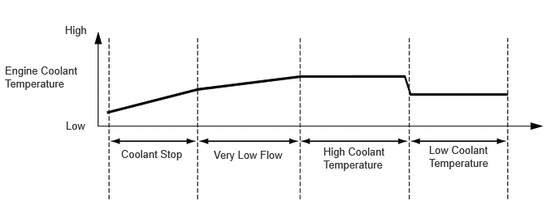

- Sends operation signals to the water control valve depending on the engine operating condition (engine coolant temperature, outside temperature, etc.).
- Limits the engine output when a malfunction occurs in the DC motor, rotary valve and valve angle sensor in the water control valve.
| Last Modified: 10-07-2025 | 6.11:8.1.0 | Doc ID: NM100000002GOOW |
| Model Year Start: 2024 | Model: Tacoma | Prod Date Range: [12/2023 - ] |
| Title: T24A-FTS (COOLING): COOLANT FLOW: WATER CONTROL VALVE CONTROL; 2024 - 2026 MY Tacoma Tacoma HV [12/2023 - ] | ||
WATER CONTROL VALVE CONTROL
FUNCTION OF MAIN COMPONENTS
|
Component |
Function |
|
|---|---|---|
|
ECM |
|
|
|
Water Control Valve |
DC Motor |
Operates according to signals received from the ECM. |
|
Rotary Valve |
Rotates according to the DC motor operation and switches the coolant path. |
|
|
Valve Angle Sensor |
Outputs the opening angle information of the water control valve to the ECM. |
|
|
Thermostat (For Fail-safe) |
Opens the valve when the coolant temperature and pressure exceed the specified value. |
|
|
Engine Coolant Temperature Sensor (Inlet) |
Detects the coolant temperature near the inlet (near the water inlet assembly). |
|
|
Engine Coolant Temperature Sensor (Outlet) |
Detects the coolant temperature near the outlet (near the water control valve). |
|
|
Engine Coolant Temperature Sensor (Cylinder Head Sub-assembly) |
Detects the coolant temperature near the cylinder head sub-assembly. |
|
|
Air Conditioning Amplifier Assembly |
Detects the exterior temperature and outputs the information to the ECM. |
|
SYSTEM CONTROL
(a) Switches the water control valve to the following 4 control patterns depending on the coolant temperature.
|
Basic Control |
Control Description |
|---|---|
|
Coolant Stop |
Shuts off all coolant paths when the coolant temperature is low during initial engine warm-up, achieving improved fuel economy by quickening the required time for engine warm-up. |
|
Very Low Flow |
Opens the heater port and bypass route port allowing a small amount of coolant to flow while the coolant temperature is being slowly increased during engine warm-up, promoting engine warm-up while maintaining cooling performance. |
|
High Engine Coolant Temperature |
Opens the heater port, bypass route port and radiator port when the light or medium load range after warm-up. At this time, the coolant flow is reduced by narrowing the radiator port, achieving a decrease in engine friction and improving fuel economy. |
|
Low Engine Coolant Temperature |
Opens the heater port, bypass route port and radiator port when the high load range. At this time, the coolant flow through the radiator port is increased and the coolant is controlled at a low temperature to suppress knocking, achieving increased performance and fuel economy. |
(b) In order to improve the heating and cooling performance, the system switches between the following 2 control patterns according to the coolant temperature and air conditioning request signals.
|
Heating and Cooling Performance Enhancement Control |
Control Description |
|---|---|
|
Cooling Performance Enhancement |
When the outside temperature is high and an air conditioning request is received, cooling performance is maximized by shutting off the heater port only. |
|
Heating Performance Enhancement |
When the outside temperature is low and the coolant temperature is at the specified value or lower, only the heater port is opened and coolant is flowed to the heater radiator unit sub-assembly only. Increased heating performance is achieved by directing the engine heat to the heater only. |
Examples of Engine Coolant Temperature and Basic Controls
FUNCTION
(a) Coolant Addition Control Mode
(1) The water control valve can be opened using coolant addition control mode even when the coolant is cold. As a result, the time required for air bleeding when performing coolant replacement is shortened.